| 3.11 心に残る140字の物語 | |
| 内藤みか | |
| 学習研究社 (2011) | |
学研
３．11 心に残る１４０字の物語
内藤みか 編
「誰かの力になりたい」
「物語でみんなの気持ちをひとつにしたい」
――インターネットサイトtwitterに日本のあちこちから「ココロの支援」が集まりました。
日本中から集まった「ココロの支援」
これらは、１４０字以内で完結している超短編小説です。すべてtwitterというインターネットサイトに投稿されたもので、そこでは最大で１４０字までしか書き込めないからこのように短いのです。
２０１１年３月11
日。大震災という未曾有の大惨事が東日本を襲いました。作家の私は１週間ものあいだ呆然としてしまい、原稿を書くことすらできずにいました。そんな時にふっと気づいたら、小さな物語がネットの中でいくつも星のようにきらめいているのが見えました。物語の世界でも、サンタさんや魔法使いまでもが総出で、被災地支援に向かっている姿がありました。読むと、忘れていた『感動』という感情を思い出し、胸が熱くなりました。そして私はひとつひとつ、お気に入りの話を集め始めたのです。
募金の額は、一人ひとりの力が集まれば大金になります。それと同じように、みんなの作品が集まって１冊の本になりました。こんな小さな物語でも、読んだ誰かを感動したり笑わせたりできるかもしれません。どこかで誰かの心を安らげることができるかもしれません。だとしたら、とても嬉しいことです。
今回の本の中には、被災地からの投稿も何作かあります。大変な状況下でも、明るい希望を見いだし、前を向いていこうとするお話が多く見られました。私はこの小さな物語たちに何度も励まされ、勇気づけられています。
この本で私たちができること、それは小説ならではの、誰かの心を温かくさせる「ココロの支援」だと思っています。
震災の復興はこれからも長い時間をかけて続けられることでしょう。あの日の哀しみ、そしてみんなの絆を忘れずにいるためにも、この小さな物語集を時々めくっていただけたらと思います。そして一緒に前を向いて、自分たちにできる支援を続けていきましょう。
２０１１年５月
内藤みか
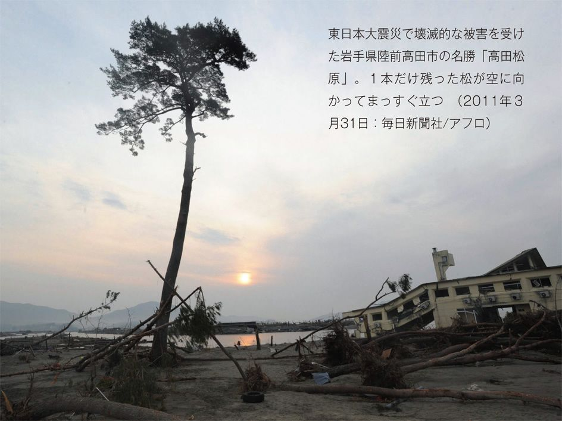
ツイッターの中のハッシュタグ #twnovel のついた投稿コーナーは、多くの人の小説投稿で賑わっています。今回収録させていただいた作品も、ここでの投稿を中心にセレクトされました。興味をもたれた方は、ぜひここにおいでいただき、読んだり書いたりしてみてください。
http://twitter.com/#!/saved-search/%23twnovel
本書に掲載されたツイッター小説は、すべての作者から掲載の承諾を得ています。小説の内容と掲載写真は関係ありません。
○スタッフ
編集協力 山田 稔（ケイズプロダクション）
○写真協力
株式会社 アフロ
本書の印税は、東日本大震災の復興のため日本赤十字社に全額が寄附されます。
寄付金の詳細等につきましては、以下のウェブサイトにて随時報告いたします。
かぐや姫
「私と結婚したければ電気を集めていらっしゃい」と、かぐや姫は言いました。
ある男は乾電池を買い占めました。
他の男はガソリンを買い占めました。
そしてもう一人は部屋の電気を消し
「私の分をあなたへ差し上げます」と言いました。
月明かりがその男を優しく照らしました。
@dropletter
きっと、守ってくれる
「世界が終わっちゃう」。
９・11
に怯えて泣くわたしを、「お前のいる世界は、俺が絶対終わらせない」と抱きしめてくれた彼。
別れた後自衛隊に入ったと聞いていたけれど、風の噂で、彼は今津波に襲われた街にいると知った。
あの時わたしを守った腕はきっと、世界を守ってくれる。
@negi_a
神様がいるところ
今日、電車で神様と会った。
うたた寝していたら隣に人が座った気配で目が覚める。
見るとお母さんと赤ちゃん。
赤ちゃんは私に手を伸ばして「だぁ」と笑った。
小さな手は悲しいニュースと不安に押しつぶされそうな私の心を、一瞬にしてすくい上げた。
神様はいるよ。あなたのそばに。
@ykdawn
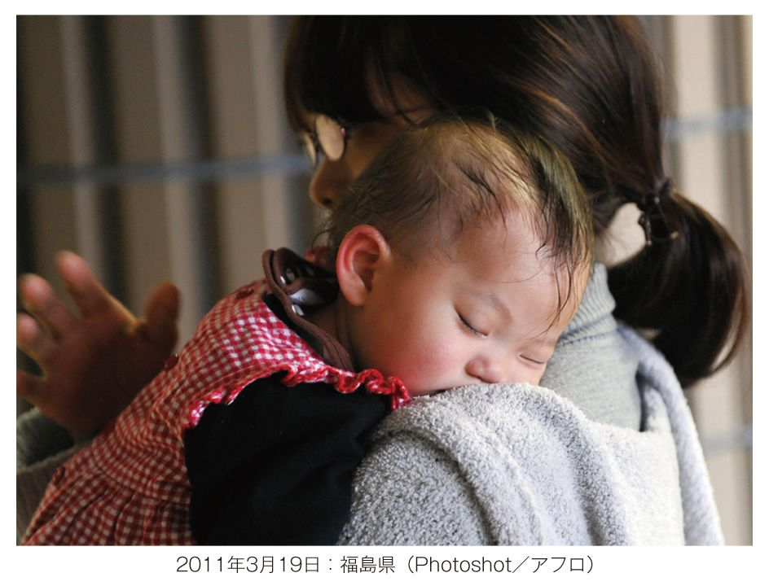
贈り物を袋につめて
「ほんとうに行くんですかあ？」とぼやくトナカイの言葉に彼はにやりと笑って答えた。
「馬鹿野郎。俺たちが年末にしか活動しないと思ってやがんのか？いいか、俺たちはな...」
そこまで言って、老人は赤い帽子をしっかりと被り直す。
「いつだって、良い子の味方なんだよ。忘れるな」
@bttftag
魔女のたくらみ
都会のマンションの最上階に住む気まぐれ魔女は、地震のニュースに心を痛めました。
私に出来ることはないかしら。
考えた魔女は、ある"伝染病"を流行らせることにしたのでした。それは次々と人々に感染して――
『ご覧ください、人々に今、笑顔が溢れています！』
@aioushii
避難記念日
体をよせて見上げる満月。
なあ、と白い息で彼。
「これまでも、これからも。愛している」
熱愛のころでも言われなかったセリフ。
何よ、こんなときに...狼
狽
する私に
「いま言っておきたかった」
毛布の中で手をつなぐ夫。その肩に私は頭をのせる。
避難先で迎えた、私たちのスイート10
。
@ideimachi
お見舞い前線
彼女たちが北へ向かうのを、私は路上で見送った。
「どうしても届けずにはいられないんだもの。私たちは食料も寝場所もいらない、ただ行くだけよ」
道が届かなくても、声が届かなくても、静かな微笑みの香とともに彼女たちは行く。
水
仙
、白
梅
、沈
丁
花
、山
茱
萸
、雪
柳
――そして桜。
@100_m
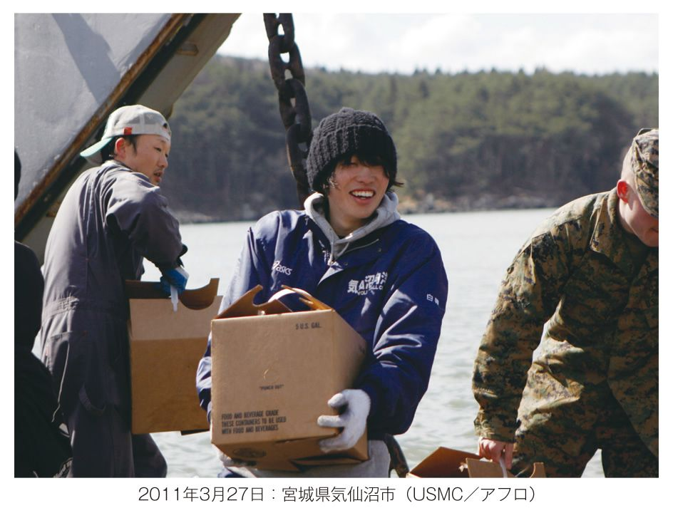
きっとまた会えるから。
「きっとまた会えるよね？」
もう会えなくなりそうで弱気になる。
「会えるよ。必ず」。「約束だよ・・・絶対だからね」
こんな約束何の意味があるんだろう。
泣いてる私にあなたの返信。
「バカ。俺が約束破ったことなんてあったか？必ず逢いに行ってやるから・・・生きてろ」
@micanaitoh
幼子を守る竜
枕の横に現れたのは羽のついた小さなトカゲ。
寝息を立てている幼子
を見上げ、隣の幼子の寝顔も見て、ひょこひょこ歩き出す。
たくさん敷き詰められた布団の間をひょこひょこ。
時折誰かが見てる悪い夢を食べる。
たくさん食べたら大きくなれる。
トカゲは何でも守れる竜になる夢を見る。
@k_you_nagi
今だから会いたい。
暗いね......手、つないでもいい？
ごめんね、遠いのにわざわざ......あ、また地震！
......ごめんね、私、浮気してたんだ......
遠くて、会えないからさびしくて......ごめん。
言い訳だよね......ねえ、本当にいいの？
仕事あるんでしょ？ うん......
来てくれてほんとに嬉しい。ありがとう......
@lostoman
心配していたよ。
あの人は無事かしら。大きな地震が来たとき、真っ先に思ったのはそのこと。
でもメールの送信ボタンを押しそびれたまま日にちが過ぎてゆく。
ふと見上げると、大きな大きな満月。
「月がきれいだよ」......思わず指が動いていた。
すぐに返事が届く。
「僕も今、同じ事を言おうとしてた」
@ykdawn
花のなぐさめ
どうやら人間達は花が咲いてるだけでも元気が出るらしいよ。
悲しく辛い出来事の話ばかり聞いていた蒲公英
達はそれを知って決心した。
綿毛になって旅立ったら、その出来事が起こった場所まで飛ぼう。
おひさまからもらった輝く色の花をたくさん咲かせるために、今日も風を待っている。
@k_you_nagi
明日元気になあれ
「俺たちの仕事は、子どもの願いを叶えて終わりじゃないはずだ」
「そうだ。まだやれることはある」。
彼らは立ち上がった。
雨で濡れることのないように。
雪で寒い思いをしないように。
使い古されたてるてる坊主たちはゆく。
続々と、被災地を目指して。
@ideimachi
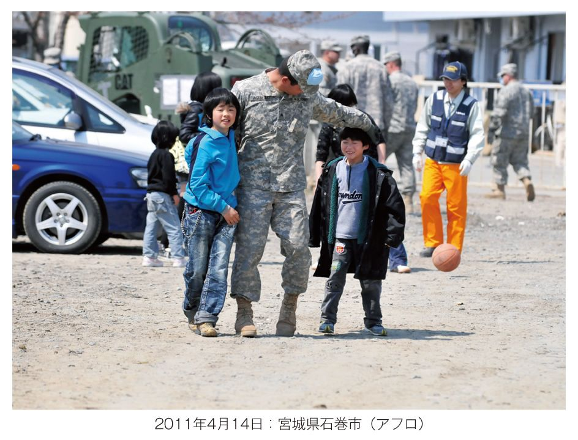
ドリームレスキュー
世界中のバクに告ぐ。
世界中のバクに告ぐ。
子どもたちの悪夢を全て確保せよ。
充分な数の良い夢の確保を完了した。
子どもたちの安眠のために悪夢を全て確保せよ。
悪夢の確保次第、良い夢の配布に入る。繰り返す。世界中のバクに告ぐ。
子どもたちの安眠のために悪夢を全て確保せよ。
@literaryace
買い支えよう
神様が、貧しい親子に僅かなお金を与えました。
親子はそのお金で、パンを買いました。
パン屋は、パンを売って鞄
を買いました。
鞄屋は、鞄を売って家具を買いました。
家具屋は、家具を売って馬を買いました。
馬を持っているお金持ちは、困っている人々のために、パンを買いました。
@yu_oshikiri
一円玉も集まれば
いちえんだまにあしがはえました。
てくてくあるけます。
いちえんだまにてがはえました。
よじよじのぼれます。
ひとつくらいなくてもばれないのです。
いちえんだまは、ぼきんばこにとびこみました。
たくさんあつまればやくにたてるのです。
いちえんだまはただのおかねにもどりました。
@k_you_nagi
うさぎの差し入れ
つきのうさぎは今日もせっせと団子作り。
次から次へとどっさり、いつもより甘くておいしい団子をどっさり。
積み上げられた団子の箱はしっかり梱包されてうちうじんボランティアの船へ。
美味しい団子は張り詰めた心を少しは和らげてくれるはず。
うちうじんはちきうに向けて出発した。
@k_you_nagi
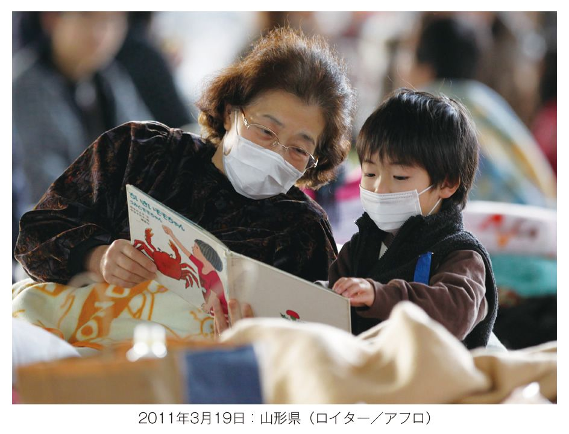
安心しておやすみ。
昼寝の時刻に大きな地震に遭った影響で、しばらく３歳の娘が寝ることを怖がるようになってしまった。
夜の寝かしつけの際、生きていることに感謝する気持ちを一緒に歌うと、平安な気持ちが娘の中に広がったのか気持ちのいい眠りに落ちた。
天使の寝姿がいつまでも見られる世の中に。
@kiyomin
プロポーズ急増
震災後、独身女性に変化が？って特集を見たら、彼氏作ったり結婚する人が急増してるんだって。
『非常時に、大切な人に守ってほしい』って。
私、独り身でよかったって思ってたんだけど。
だって本当に大切なものは守ってあげたくなっちゃう。
そう言って、彼女は僕の手をそっと握った。
@nayotaf
メールでつながる心
結婚して７年。
２人の仲もすっかり冷めてしまったと思ってたけど、地震の最中に真っ先にあなたの顔が思い浮かんだ。
ようやくメールが届くようになったら、あなたからのメールが数十通も...。
なんだ...やっぱり私達って気が合うんだね。
@kiyosei2
停電の夜の乾杯
ローソクの炎に照らされる中、乾杯をした......と書くと、なんだかロマンチックに見えるかもしれないが、手に持っているのは芋のお湯割り。
しかも暖房まで止まっている。
けれど、それでも温かいのはきっとお酒のせいだけじゃない。
二人で毛布にくるまりグラス片手に話をする停電の夜。
@akihito_i
エイプリルフール
避難所で彼女はいつも笑顔を振り撒いていた。
誰もが彼女の笑顔に癒されていた。
つらい筈なのに一言も弱音を吐かなかった。
...そんな彼女が。
「今日は嘘をついてもいいんですよね」
人目のつかない場所で泣いていた。
「嘘泣きですから」と彼女は涙を流した。
@harayosy
メールの行き先
震災の時に友達に送ったメール、今もまだ届いてないらしい。
どこへ行ったんだろう？
きっと、神様のところ行ったんだろう。
神様が吸い取って仕舞ったんだろう。きっと。
だから皆が大切な人に送ったメール、届いてると想う。天国で見てくれてると想う。
@Cyai_Cyai
激励
あの日から一人になった僕。
沈んでいく気持ちを押し殺して毎日頑張っていたら、友人から怒られた。
「あのな、つらい時はつらいって言え。悲しいなら泣けよ。無理すんな。寂しいっていう気持ちを素直に出すのが『今』と向き合う事じゃないか」
その夜僕は泣いた。明日から、頑張ろう。
@harayosy
涙こらえて
あの日から泣かないって決めた。
泣いていいよって言ってくれた優しい人もいる。
長い時間をかけて未来を切り開いていくこの町に、私の涙は必要ない。邪魔になるだけだから。
いつか「あの日」が記録の中にだけ残って、憶えているのが私だけになったら、泣こうかな。
長生きしなきゃね。
@k_you_nagi
エール
「ねえねえ、ママー」
「ごめんね、今忙しいから静かにお絵かきしてて」
いらいらと、クレヨンと紙を渡してしばらく。
「ねえねえ」
「ああもう、静かに出来ないなら返して！」
ぎゃーっと泣き出す娘から取り上げた紙を、ふと見ると。
『まま、がんばって！』
今度は私が泣き出す番だった。
@nayotaf
奇跡
あの地震と津波が僕から沢山のもの─
家や友達を奪って行った。
けれど、その代わりに置き土産を残して行った。
その中身は、あんなに鬱陶しかった親父や母さんと再会できてあんなに泣いたこと、それから、自分が今生きているということが物凄い奇跡だってこと。
@nora_kuragen
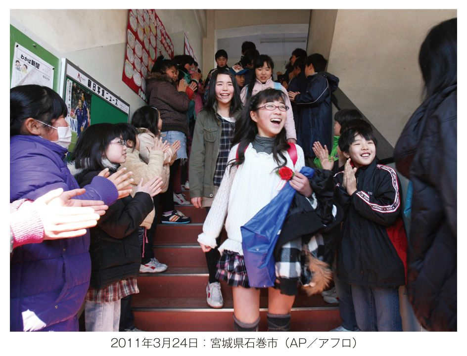
たくさんのありがとう
普段気恥ずかしくて面と向かって「ありがとう」なんて言えないんだ。
でも、今なら言える。
心配してくれてありがとう。
側にいてくれてありがとう。
祈ってくれてありがとう。
そしてなにより、生きていてくれてありがとう！
@ANya52lily
キャンディ
はい、どうぞ。
ありがとうと受け取った物は一個のキャンディ。
小さな女の子がくれた。
物資が乏しいという人生で初めての経験の中でこの一個がとても尊くて、輝かしくて。
彼女自身がたくさん食べたいはずなのに。
口に頬張る。甘さが広がる。
なぜだろう、涙が止まらない。静かに俯
いた。
@ruka00
ひとりじゃないよ
優しい君はいつも心配ばかり。
家族の事、友達の事、辛い人達の事。
細い両腕からこぼれ落ちそうなほどたくさんの不安を抱きしめて、泣きそうな顔をしている。
大丈夫だよ。一人で抱え込まないで。
心配している君を心配する人がたくさんいる事も忘れないでね。一緒にがんばろう。
@setugetufuka
将来の夢
被災地から生還した従姉
の子、埃
にまみれた顔は酷く深刻な顔。
激震に呑まれて父親を失い、余震のせいロクに眠れず、ずっと一体何を考えていたのだろう？
「おじちゃん？」「どした、大丈夫か？」
「あたし、お医者さんになりたい」
こんな小さな子に、負けてていいのか、俺たちは。
@ti_clocks
ただ生きているだけで
何も言わなくていい。
あなたがいる。
それだけでいいと、あの日心から思った。
二度と会えなくてもいいから、どうか無事でいてと。
だから何も言わなくていい。
そばにいてくれなくてもいい。
遠くても空の下、あなたがいる。それだけでいい。
@chiho_yoshino
ふたりで分かち合う
あるところに笑わない少女がいた。
「どうして」と友達の少年が聞くと、「お父さんにあげたから」と少女は答えた。
すると少年は自分の笑顔を取り上げ、半分を少女に渡した。
やがて二人は結婚した。
彼らはお互いの微笑みを分け合って、末永く幸せに暮らしたという。
@chimada
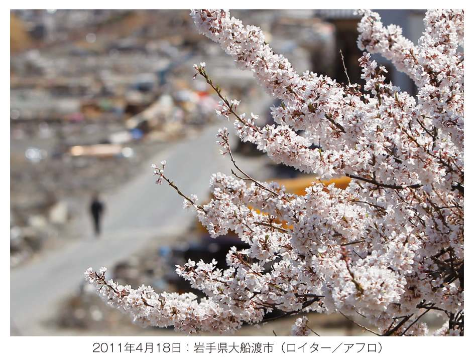
未来の友へ。
二万人が死んだと言われても赤の他人に対して悲しみを抱くことは難しい――
そんな人は、これから巡り会う可能性のある人々の中から二万人が先に逝
ってしまったのだと思えば、自然と涙は零
れる。
@chocolatesity
３日分の笑顔
娘が笑わなくなった。
理由を聞いても「誰にも言えない」と言う。
「人に話すとダメなの」と口をへの字に結ぶ。
そっとして様子をみるしかない。
３日後、娘に笑顔が戻った。
「せめて私の３日分の笑顔を、被災地の人に分けてあげて！と神様にお願いしたの」
娘の願いはきっと届くと思う。
@ahaharui
朝の風景
探し物をしている間に眠ってしまった。
目が覚めて、それが何だったかもう思い出せない。
だけど、もういい。
見慣れた天井。カーテンからもれる朝の光。
お気に入りのカップ。熱いコーヒー。
トーストに卵焼き。子どもたちの笑い声。
なぜだか涙が止まらない。
ラジオからは、レクイエム。
@oboroose
明日はまた来る
『たとえどんなことがあっても、次の日には必ず朝はやってくるのよ』
受験で落ち込んでいた私。
初恋の彼に振られてしまい何もかもイヤになってしまった私。
そんな私を支えてくれたのは大好きだった祖母の言葉たち。
『ちゃんと寝て疲れを取るのよ。だからもう泣くのをやめておやすみ』
@wacpre
もう会えない人
彼と初めて待ち合わせた場所に、今日はひとり。
もうここにはいないのに、今も人波の中に彼の姿を探してしまう。
もしまたここで出会えたら。
そんなことをぼんやり考える。
いまならあの頃と違ったふうになれるのだろうか。
なんて、そう思うのはきっとわたしだけ。
ため息、ひとつ。
@silly_cats
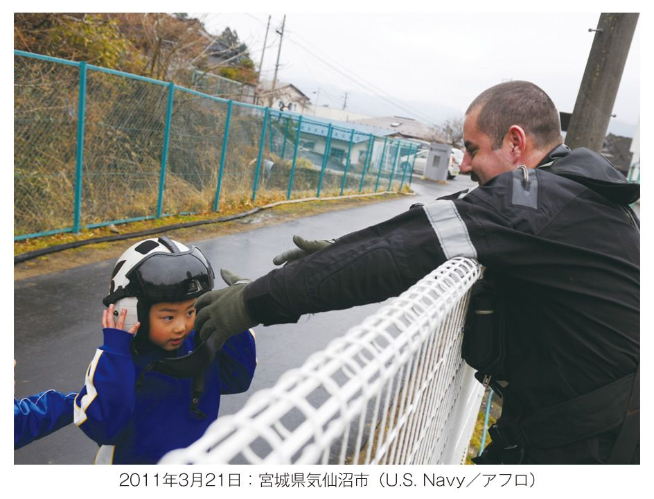
宝物は何ですか？
娘の避難袋を作っているところです。
私が「宝物があったら入れなさい」と言ったら、娘はしばらく考えて「宝物なんて、ない」と言いました。
そして「でも、これだけ」とおねだりして買ってもらった高級色鉛筆だけ入れました。
絵を描くという行為こそが彼女にとっての宝物なのだとわかり涙が出ました。
@micanaitoh
アールグレイ
スーパーは異様な雰囲気だった。
皆、山のような品物をカートに載せ、憑
かれたように歩き回っている。
私はそんな人々の間をすり抜け、目当ての品を見つけると、それだけ持ってレジに並んだ。
アールグレイの紅茶。
あのひととあの日飲むはずの。
それだけが、今の私が欲しいもの。
@amamuta
止まった時を再び
ある時計屋が被災地を訪れた。
大震災の時刻で止まってしまった、数多くの時計たちを直して廻る為に。
「いつか時が癒
してくれる」
そんな言葉をかけられるほど、人々の傷は浅くない。
だから時計屋は、ただ時計を直して廻った。
いつか時が。そう、願いを込めて。
@jun50r
再会
被災した古くからの友人を心配してアクセスした消息情報サイト。
10
年前に別れたあなたが共通の友人の消息を心配して書き込みしていた。
友人の消息がわかった時に、彼にメールをした。
「君も気をつけて」という短い返信に、今はもう話すことすらないんだと時の流れを感じる。
@terueshinkawa
ラジオのおかげ
今は電気が通っておらず、部屋は真っ暗。
辺りは静かで、孤独感が半端ない。
それを紛らわす為にラジオをつけた。
ラジオから流れる声で辺りの静けさが去り、無いはずの体温を側に感じた。
まるで言葉にも温度があるように心が温かくなっていく。
気がつけば、笑っている僕がそこにいた。
@another_signal
震源地
「また揺れた？」
「揺れているのは僕の心、震源地は君だ！」
@BlackFox17
譲り合いの心
被災した日本人は秩序だっており、互いに助け合う心を忘れていない、と聞いたが、間違いだったようだ。
現に海外から救助隊として来た私の目の前で、日本人同士が喧嘩を始めている。
と、日本語の解る隊員が呆れた様子で言った。
「向こうを先に助けてやってくれと怒鳴り合ってます」
@jun50r
歴史をつくろう。
ちいちゃいおはなしをたくさんあつめました。
ひとつひとつをつなげてたばねたら、ながいながいおはなしになりました。
おとなのひとたちが、それは「れきし」だとおしえてくれました。
れきしは、ずっとつづいていくそうです。
ぼくのちいちゃなおはなしも、れきしのいちぶだそうです。
@k_you_nagi
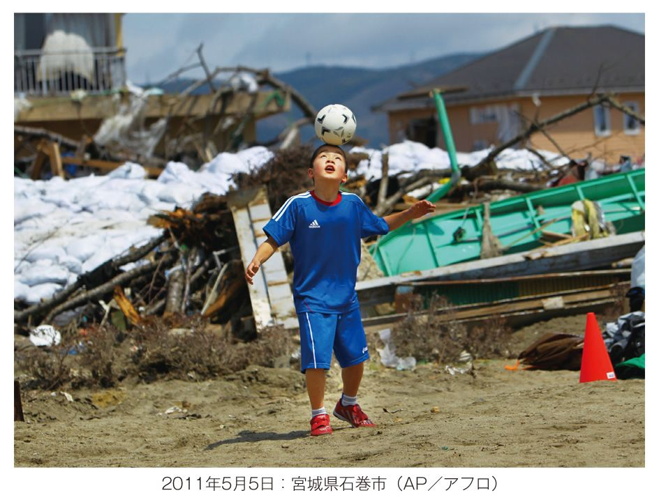
切符一枚あれば
「どうしたんですか神様、お姉さん座りで」
「足が痺
れたんだ」
「なんでまた正座なんかしてたんです？」
「東日本大震災の被災者の慰霊のために祈りを捧げてたんだよ。現地スタイルで」
「これあげますから、さっさと立って行動してください」
「なにこれ？」
「現地行きのチケットです」
@bttftag
節電新商法
「15
％削減。本数を減らさないとなると空調が...」
「窓を開ければ」「危険防止のため、だめだ」
「扇風機は？」「冬には不要だ」
「ドアを開けっ放しで運行...」「バカ言え」
「うちわを配るのは」「なるほど」
「それを切符にすれば」。
世界中の鉄ヲタが集まった。
@kandayudai
日だまりの幸せ。
窓からさす陽に布団を室内干し。
それを見つけた娘と息子が『あったかいね』『うん』と、光を浴びてころげまわってる。
大切にしなくちゃいけない時間は、こんな近くにあるんだね。
@Lico_citrus
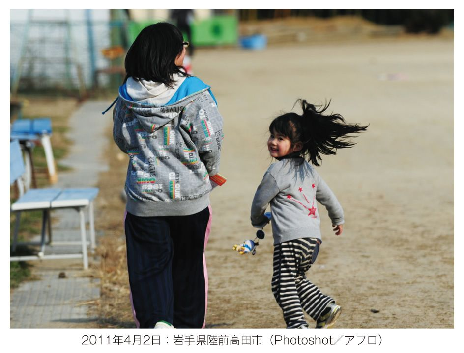
水を買い占めない。
妻が水を何本も買ってきた。
報道によると、水道水から乳児の摂取限度指標を超える放射性物質が出たという。
私は妻の頬を叩いた。
「恥ずかしくないのか！乳児のいる家庭に譲るべきだろう！」と、
妻は「...貴男のそういう所好きよ。この子も似ると良いのだけれど」とお腹をさすった。
@jun50r
究極の節電
夏の節電対策としてエアコンの使用を控えるよう呼びかけましたが、不安の声が多かったため方針を変更いたします。
エアコンは使って構いません。
しかしその前に極限まで徹底したクールビズを皆さんにお願いしたい。
見てお分かりのように私は既に実践しております。
その名も全裸ビズ！
@shinichikudoh
買い占めたいもの
「一人で必要以上に買い占めてる人いるけど、サイテーだよね。自分だけよければいいなんて」
「実は俺、一つだけ独占したいと思ってるんだけど」
「え？何？食糧？お金？」
「目の前の君」
@shortshortshot
書くと楽になる
つらいこと、不安なこと、なんでもいいです紙にぜーんぶ書いてください。
文字じゃなくてもいいですよ。
絵でもなんでも大丈夫。
それを眠る前、窓辺に置いといてくださいぼくが食べに行きます。
太りすぎになろうがメタボになろうが、ぜーんぶ食べます。君の笑顔が見られるなら。
@sakuyue
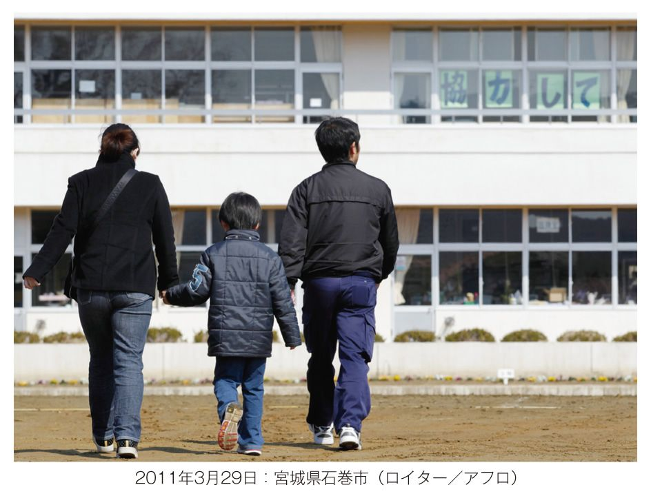
夢の節電エアコン
「電力を使わないエアコンの開発に成功しました」
「ガスエアコンなら既にある」
「ガスどころかエネルギーを全く必要としない夢のエアコンなんです」
「そんなことできるの？」
「既にここで稼働しています」
「どこにも見当たらんが」
「なんせエアエアコンですから」
「普通に暑いけど」
@shinichikudoh
ラブカウンター
ＵＦＯが飛来した。
「艦長、日本という国から微量の放射線を検出。原発事故です」
「なんと愚かな。やはりこの星は我々が統治すべきだ。所で、隣のメーターが振り切っているが？」
「これは愛を測る計器です。世界中から被災地に愛が注がれていますね」
「...。侵略はやめておくか」
@jun50r
余震ありすぎて
「なぁ、アイツ、最近図に乗ってないか？」
「あぁ、やりたい放題だよな」
「自分が一番偉いって勘違いしてないか？増長しすぎだよ」
「そうそう、ちゃぶ台ひっくり返す様な事、平気でするしな」
「ああいう奴って何て言ったっけ、ほら四文字熟語で」
「ああ、あれか」
「「地震過剰！」」
@takao_rival
再起を誓おう
『震災から三年、正直何度も心が折れかけたが、その度に歯ぁ食いしばって立ち上がってきた。今日、やっと自分の町に帰ってきた。自分の家に戻ってこれたんだ。』
そう書き込んで、俺はノートを閉じた。
これは三年後に開く日記だ。
見てろよ震災の馬鹿野郎。
今日から俺の反撃開始だぜ。
@senzaluna
ボランティアしよう。
少しずつ光が戻ったんだよ。
煌
びやかな夜の光を遠くに見て彼は言う。
初めて僕がこの町に来た時、本当に光が少なくて暗かったんだ。
記録の中にしか震災を知らない私は想像の中に暗い町を見る。
あれから十数年、神戸から私達は東北の町へ向かう。
一つでも光を戻す手伝いをするために。
@k_you_nagi
故郷が呼んでいる
「もう東京の会社やめて田舎に帰ろうかなとぼんやり考えていたんですよ。それが、震災の当日で、そう考えたすぐあと地震があって。これは運命だと、会社をやめました。僕は来月田舎に帰ります。田舎ですか？ 被災地ですよ」
@micanaitoh
歯車連ねて
一番でなくても唯一になればいいというけれど、その難易度は低くない。
歯車になろう社会の歯車に。
歯車にできるのは、一歯一歯回転しチカラを隣に伝えることだけ。
しかし歯車の連なりは、どこまでも力を伝えられる。
その他歯を磨き回り続けよう。
波に流された街が元に戻るまで。
@Orihika
自分支援
自分復興。
それが何より大切な震災復興の第一歩だと思っている。
だから僕は音楽を聴いたり、漫画を読んだり、友達と遊んだり、勉強は......
まあ、今は横に置いておこう。
兎にも角にも、僕は楽しく過ごしているよ。
だから君も好きなことをして楽しく過ごせばいい。
震災復興の為にもね。
@another_signal
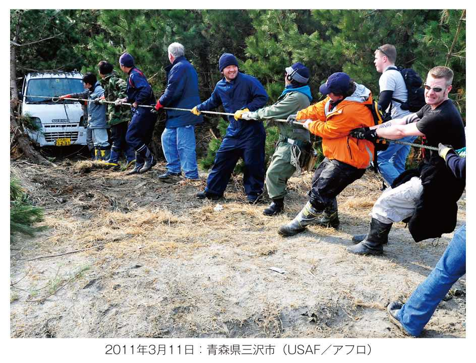
生まれたつながり
計画停電の時間が近づくと、人々は本や碁盤やお茶菓子を持って家を出る。
そして自家発電照明の集会所で、ささやかなくつろぎの時間を過ごす。
そこにネットは無いが、語らいによって結ばれた人の繋がりがある。
やがて停電が終わり、人々はそれぞれの家に帰る。
明日の約束を交わして。
@tokoya
日々が戻っても
あれからひと月後の夜。
凍えていた夜の窓外ではころころと蛙
が歌い、僕はひびだらけの家で何事も無かったかのようにキーを叩いている。
雨で桜が散り、妹は新しい生活へと帰っていった。
テレビの中と同じように薄れていく非日常。
時折街中ですれ違う異変に、はっと目を見張りながら。
@Asatoiro
経験を糧に
時間は大地に降り積もる落ち葉と似ている。
長い期間をかけて過去の経験は心の肥料に変わり、今と、未来を作り出す土壌になってゆく。
だから望む未来を創りたいなら沢山の経験をしたほうがいい。
負の経験もやがては心の財産になると信じて。
@verselet
繰り返されても
積み上げてきたものが崩された。
うつむいたときに涙と一緒にこぼれたものを、また拾うかどうか迷う。
この先、何度おんなじ目にあっていかなきゃいけないのだろうと思うと、迷う。
そして迷いながら拾いながら怯
えながら空見上げながら家に帰る。
そんな人たちが作ってきたものが尊い。
@kamoe1983
先は長くても。
風に煽
られ、木々が鳴る。
嵐は唐突で呆気
なく、空は気まぐれ、気が迷う。
道は遠くて長く、先が見えない靄
の中。
雲はついて離れて浮かんで消えて、風に乗りたいと願ってまた前を向く。
流れる噂に惑わされては歩を止めて、月明かりを頼りにまた一歩。
それでもいつか、たどり着くから。
@nona140c
救援物資
被災地へ救援物資を運ぶ任務に入る直前、隊長が俺達に言った。
「我々はこれから、被災地で困っている人達に食料や衣類等を届ける、だがもうひとつ、我々は持って行く物がある。それは、希望だ！」
@schpertor_kaien
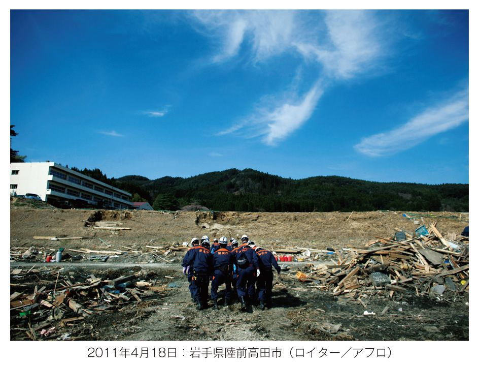
がんばれるわけは......
気やすく「助けて」「手を貸してほしい」と言えない。
恋人ではない人。
たったひとこと「だいじょうぶ？」とメールが来ただけでもありがたいと思わなくては。
あの人のメールのおかげでふんばっている。
大好きで大切なあの人が必ずまた会おうねと言ってくれたから。
「だいじょうぶ」。
@micanaitoh
空っぽの棚
その百貨店では水やパンどころか、全ての食料品が棚から消えていた。
マロニーさえ消えていた。
「店員だけで独占してるんだろ！」
「俺たちは客だぞ！」
「自分たちさえ良ければいいのか！」
殺到した人々の怒号が響いた。
「全て被災地に送りました」
店長の一言でその場は静まり返った。
@simmmonnnn
コンビニのありがたさ
青空の下、長机の前に立つ男を見かけた。
カラフルな制服姿が、見渡す限りの瓦礫の中で強烈な違和感を放っている。
行き過ぎようとして、笑顔で声をかけられた。
「いらっしゃいませ！セブンイレブンへようこそ！」と。腹の底から何かがじわりと沸き上がる。
そうか、これが日常の力か。
@bttftag
未来があるから。
あの日起きた原発事故の結末を僕達はまだ知らない。
けれど、僕達には未来がある。夢も希望もある。
明日に向けて、一歩ずつ希望をつなげていくこと。
かつて見た花をもう一度、咲かせるために
@haluhill
東北を味わおう。
福島の自然郷「ほたる」は、ひとめぼれを使用した純米吟醸。
宮城の一ノ蔵「掌」は、ササニシキを手づくりで醸した純米酒。
岩手の南部杜氏「南部関」は、ひとめぼれの無濾過生原酒。
秋田の「刈穂」は、あきた酒こまちの山廃純米酒。
東北に酔う宴は想いでも酔う。
@mumei7c
千円鶴
毎月一度、鶴が舞う。11
日に、鶴が舞う。
漱石さんの笑顔とともに、日本各地を翔びたって。
銀河鉄道見下ろして、奥の細道駆け巡る。
そんな景色を夢想して、誰でもなれる鶴使い。
再び春がめぐるまで、一羽と言わず二羽三羽。
軽い気持ちで買い物ついでに24
時間コンビニで。
@Orihika
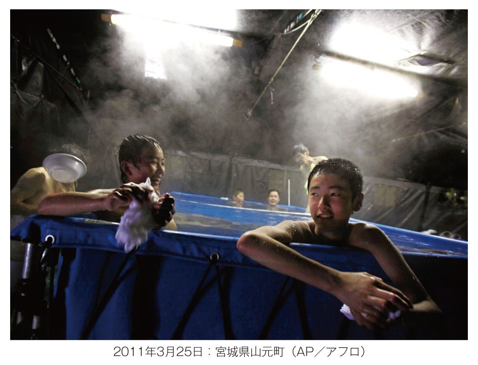
上を向いてみよう。
天気さえも何か気がつくこともないまま、何日間過ごしてきただろうか。
久しぶりに空を見る。
いたずらなほどに快晴だった。
日の光がこんなに眩しいと感じたのは初めてだ。
希望が閃
いてきそうな青空の下うんと背伸びをする。
うん。生きる希望が湧いてきた。
涙は尽きないけれど、進もう。
@ruka00
募金活動を
いつも通り目が覚めた。
シャワーを浴びる。
節電という言葉が浮かんだが気にしなかった。
近くのファーストフードで朝食をとる。
ありがとうございますと言って渡された釣銭をレジ横の小さな箱に放り込んだ。
女の子はもう一度ありがとうございますと言った。
さっきより少し大きな声で。
@shin1960
命のつかいかた
王は言った。
「一からこの国を再建する。しかし生
け贄
が必要だ。誰かこの国の未来の為に名乗り出てはもらえないか」
予定を上回る若者が集った。誰の顔にも迷いはない。
王は心から安堵し、自ら毒を飲み干した。
「生け贄は余だ。お前達はよく話し合い新たな王を選べ」
復興は早かった。
@onaishigeo
愛の桜だより
八
百
万
の神様会議。
「我々とて万能ではない。ひとつの事象に注力すれば、一方で割を食う事象もあり得る。今は震災復興が最優先。その他については下界に我慢を強いることもやむを得まい」
「桜の開花も後回しか？」
「いや、開花時期を早めよう。満開の花の割り増しは？」
「異議なし」
@hiro_kinako
生きる理由
もらった愛や優しさを返しても返しても返しきれないから。
今日も生きてる。
@mick004
震災を越えて
俺が、高校に入学して学校になれた頃に、薄汚れた現金書留が届いた。
故郷の祖父・祖母からだ、震災で避難したままだが。
中身は新札が数枚と手紙だった。
「入学おめでとう。がんばれ」。
消印は３月10
日。
じいちゃん、ばあちゃんもがんばれ。
@kandayudai
光を見つめて
あたり一面真っ暗闇で、物音ひとつ聞こえやしない。
私はグッタリとなってとぼとぼと歩いていた。
ふぅっと溜息交じりで何気なく上を向く。
そこには満天の星空。
停電のおかげでやけに綺麗に輝いて見えた。
そうか、光はいつだって上にあるんだ。
だから上を向いて進んでいこう。
@takesuzume
二十年後にはきっと。
埋まっていたタイムカプセルを掘り起こした。
二十年前に書いた自分への手紙には
「今は何も無いけれど、それでも元気と笑顔だけは持ってます。今の貴方は持ってますか？」と。
一面瓦礫の山だったここに今、花が咲き、蝶が舞い、鳥が空を飛ぶ。
子供も出来た。沢山、沢山、持ってるよ。
@nagi_tter
震災がくれたもの
震災で人の暖かさを知りました。
震災で命の大切さを知りました。
沢山の大切なものを失いました。だからこそ思う。
生きてて良かった。生きててくれてありがとうと。
沢山の人に救われました。
沢山の言葉に救われました。ありがとう。
人と人の繋がり、絆の大切さを実感した。
ありがとう。大切な仲間達。
@megumegu69
前進しよう。
震災から一ヶ月がたった。震災から二ヶ月がたった。
三ヶ月が、一年が、十年が、これから過ぎていくだろう。
過ぎた時間は重要じゃない。
重要なのは震災があった事実。
失われた多くのもの。
そしてそれでも起き上がった力。
前に進んだ心。全てが歴史となる日まで。
僕らは進んで行く。
@takesuzume
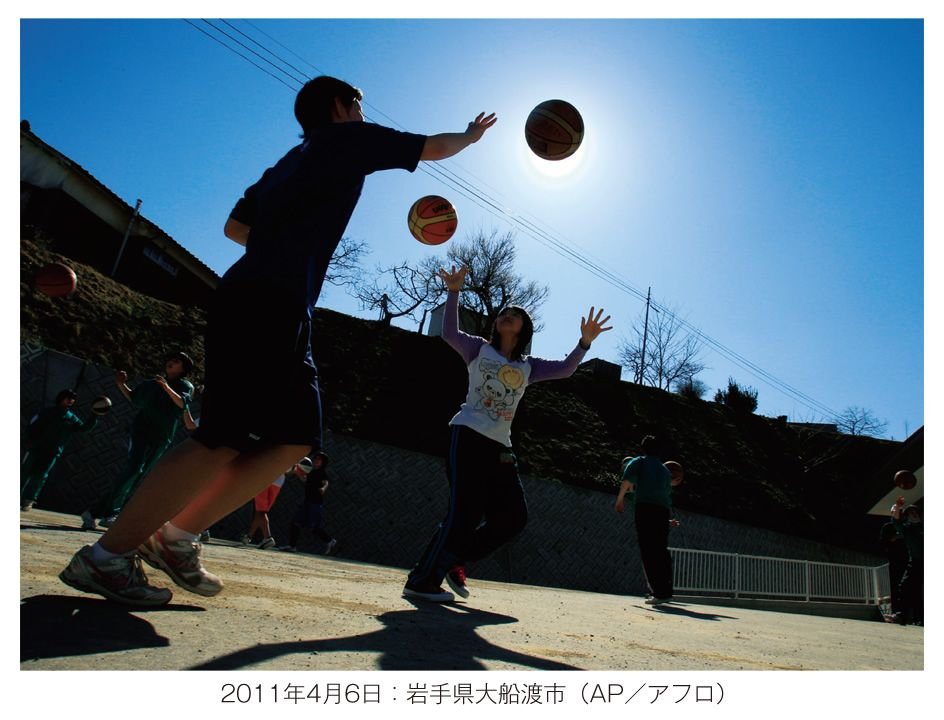
歌で励まそう
歌で世界は救えない。歌は何も解決しない。
歌は無力。──でも、だからわたしは歌うのよ。
歌を聞いた誰かの心が癒えるかもしれない。
明日を生きようって思うかもしれない。
そんな可能性があるなら、わたしは歌わずにはいられないわ。
歌は無力よ。だけど、それを聞いた人は無敵よ。
@senzaluna
命の繰り返し
春の陽に 眠る林の 静けさに 陽気な風が そよそよと
心の扉 そっと開かせ 花々揺れる 春の野に 恵の雨も
出番待ちかね 鳥や虫等も いそいそと 命の祭 始めかけ
人も奇跡の 同じ舞台に 春夏秋冬 繰り返しつつ
進む命の 物語かも
@hedekupauda
学び舎を前に
変わり果てた母校を目の当たりにし、私はただ立ち尽くしていた。
思い出の中の学び舎はもうそこには無い。
呆然としていた私の前を、子供達が元気に走り抜けて行く。
そうだ、この子達の未来の為にも、過去に囚
われ立ち止まってはいられない。
気付けば私も子供達を追い走り出していた。
@aquall
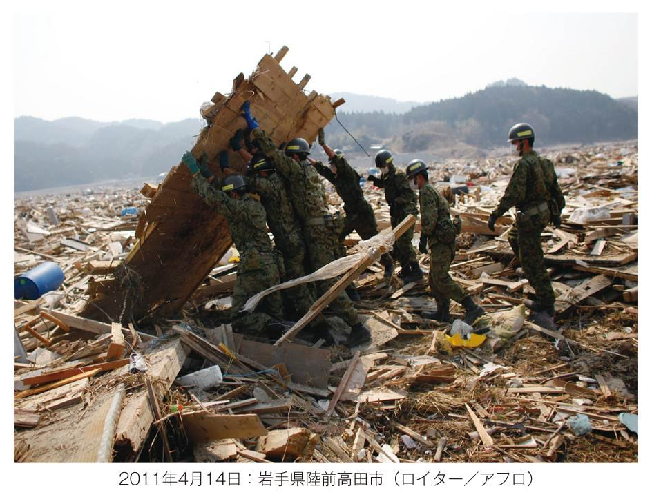
自分を応援したい
「もしもし？ああ、元気か？うん、うん。大変そうだな。いいか、今が踏ん張り時だ。負けるな。頑張れ。絶対に努力は実るから。それじゃ、またな。」
「誰と話してたの？」
「ん？過去の自分とさ。」
@Sasa_haru77
気持ち届け。
「地震大きかったね...無事ですか？」
「やっと水出るようになったよ～！」
「個人商店開き始めたんだ♪」
「原発早く何とかならないかな...」
返信が来るはずないって分かってるのに、ついメールを送ってしまいます。
@kiyosei2
明日も笑顔で。
泣き疲れて眠る君の顔は、少し大人びて見えた。
もうちょっと、子どものままでいさせてあげたかった。
世界はどこまでも優しくて、悲しみなんてないのだと思わせてあげたかった。
目を覚ましたら伝えよう。笑顔を作って伝えよう。
それでも朝は来るのだと。
ほら、もうすぐ夜が明ける。
@chiho_yoshino
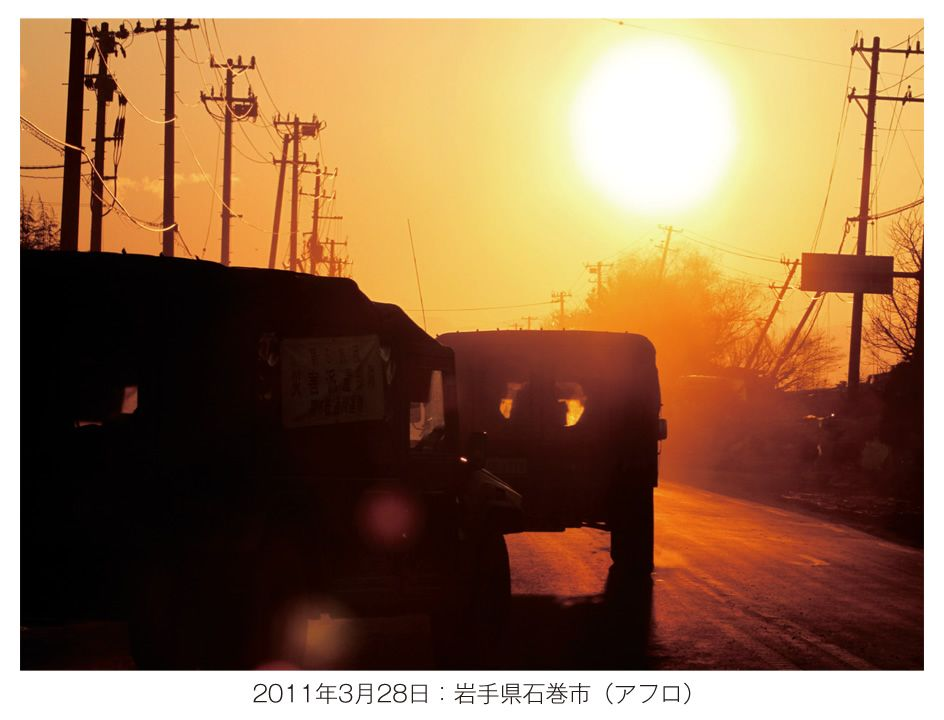
ずっと、おぼえてるから。
忘れられる事が怖い。そんな声が耳に届く。
忘れないよ。その声を届ける術が思いつかない。
だからここに書く。
10
年経っても50
年経っても、それ以上時間が経っても生きている限り忘れない。
嘘だと思われてもいい。
自分が知っていればそれでいい事もある。
でも君にだけは伝えたい。
@ruka00
何も言えないけれど。
頑張れって口にしたら、何だか薄っぺらく感じて無口になってしまったの。
でもあなたを想うと胸が痛い。
こんなにも大切だって、その痛みが教えてくれている。
だから無言でエールを送る。
あなたに届きますように。
今日も明日も、これからもずっと。
@chiho_yoshino
忘れたくない
忘れる事なんて出来ない。
きっとボクはあの日の事を忘れない。
失った全てを忘れない。渦巻く感情を忘れない。
流した涙を忘れない。
差し伸べられた手の温もりを忘れない。
前に進む気持ちを忘れない。
明日への希望を忘れない。
そしてキミの優しい笑顔を忘れない。
いつまでも忘れない。
@aquall
花見の決意
それでも花は咲く。
線路沿いの桜の木がほころびはじめた。
去年のような浮き立つ気分にはどうしてもなれないから、花を見ながら遠い未来へと気持ちをはせることにする。
来年もきっと、どこかで桜は咲くだろう。
その時に笑っていられますように。
今年の花吹雪は"決意"の景色だ。
@ykdawn
○編者プロフィール
内藤みか ＠micanaitoh
作家＆エッセイスト。電子書籍などで活動中。『１日10 分からのソーシャルネット入門』（技術評論社）、『ソーシャルライフログ』（朝日新聞出版）など著書多数。
３．11
心に残る１４０字の物語 電子版
２０１１年10
月 version1.0発行
編者 内藤みか
発行人 土屋俊介
編集人 新井邦弘
編集長 倉上 実
発行 株式会社 学研パブリッシング
〒１４１－８４１２ 東京都品川区西五反田２－11 －８
【お問い合わせ】http://ebook.gakken.jp/contact/
（電子出版専用）
Gakken Publishing 2011
本書の無断転載、複製、頒布、公衆送信、翻訳、翻案等を禁じます。
学研の書籍・雑誌についての新刊情報・詳細情報は、次をご覧ください。
学研出版サイト http://hon.gakken.jp/